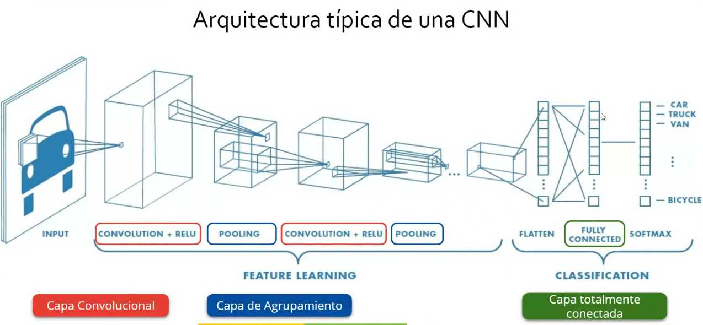
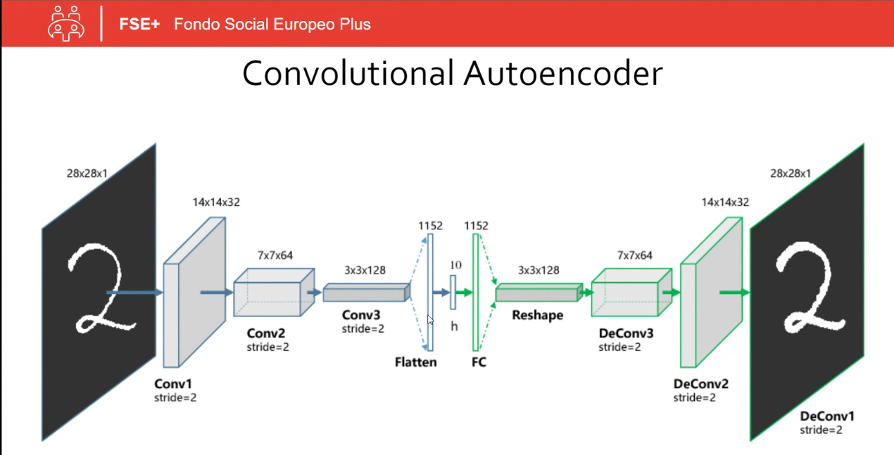

1. Dali AI E2 y E3 => herramienta de Open AI que utiliza la IA (Inteligencia Artificial) generativa para generar imágenes.
2. Sora AI => herramienta de Open AI que utiliza la IA (Inteligencia Artificial) generativa para generar imágenes.
3. Deep Dream AI => herramienta de Google que utiliza la IA (Inteligencia Artificial) generativa para generar imágenes.
4. Lexica.ART => herramienta que utiliza la IA (Inteligencia Artificial) generativa para generar imágenes, desarrollado por Sharif Shameem.
5. Midjourney.COM => herramienta que utiliza la IA (Inteligencia Artificial) generativa para generar imágenes, desarrollado por David Holz.
6. ThisPersonDoesNotExist random AI => herramienta que utiliza la IA (Inteligencia Artificial) generativa para generar personas humanas aleatorias y no existentes al actualizar la página web. Desarrollado por el ingeniero Philip Wang en 2019.
Todos ellos siguen el siguiente esquema:

Donde el Discriminador sigue la Arquitectura CNN (Convolutional Neural Network) o RNC (Red Neuronal Convolucional) en español:

La CNN es una arquitectura de red para Deep Learning que aprende directamente a partir de datos. Usada para identificar patrones en imágenes,
con el objetivo de reconocer objetos, clases y categorías y, para clasificar datos de audio, señales y series temporales.
Además, puede tener cientos de capas para aprender a detectar características de una imagen completa. Todas ellas, se pueden agrupar entre
tres capas principales:
1. La capa convolucional o inicial => es aquélla donde se aplica el proceso de convolución para la transformación de la imagen inicial.
2. La capa de agrupamiento o características => es la capa de aprendizaje de características de la imagen inicial.
3. La capa totalmente conectada o de clasificación => es la última capa donde se clasifican esas características para así poder obtener
el resultado final (imagen final).
Software práctico de una Red Neuronal: TensorFlow
Autocodificador Convolucional:
